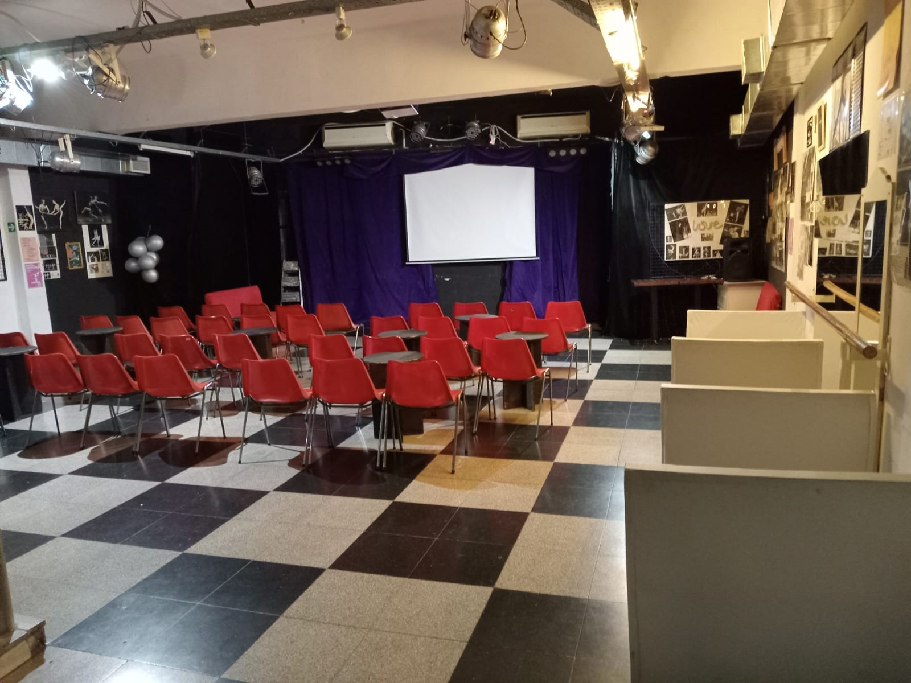
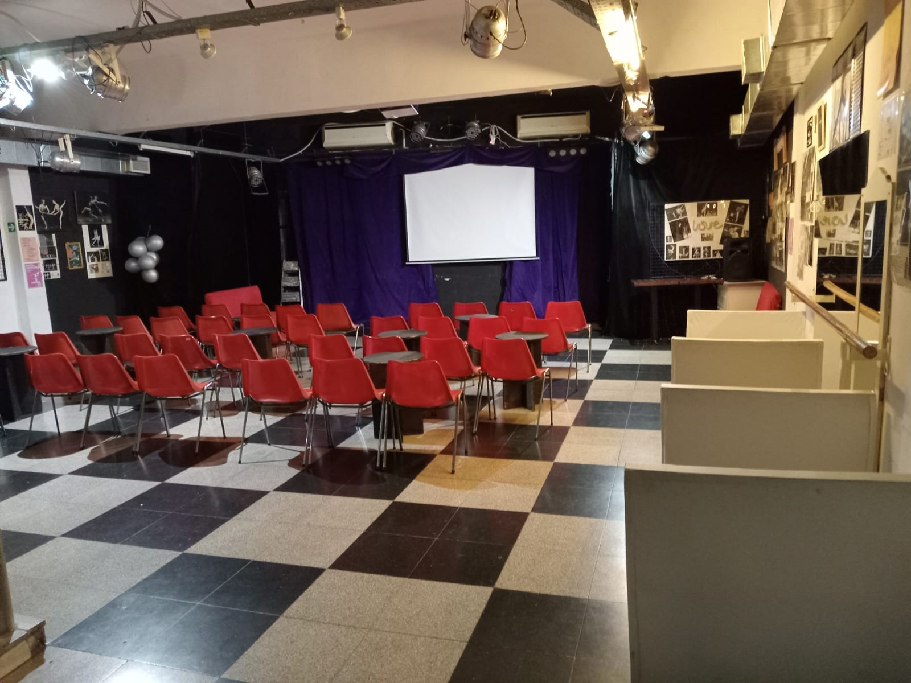
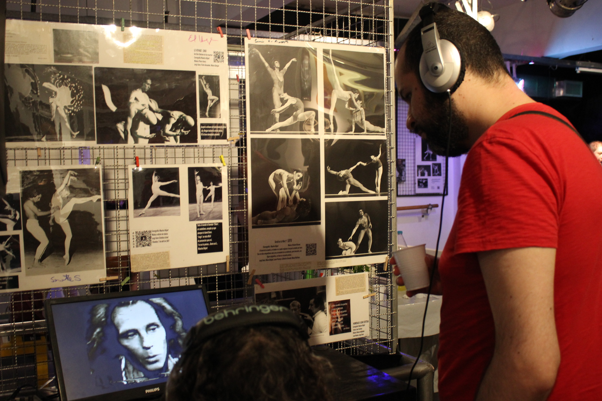
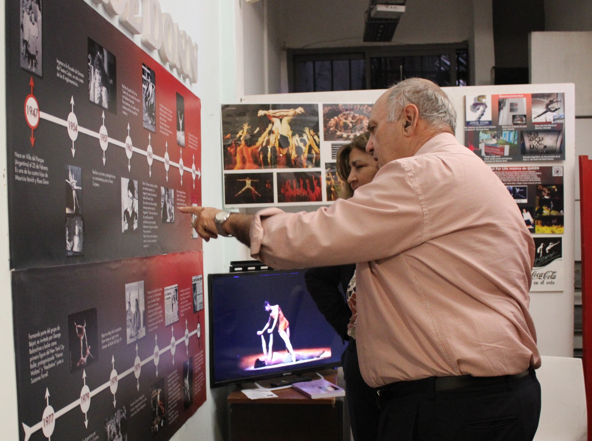
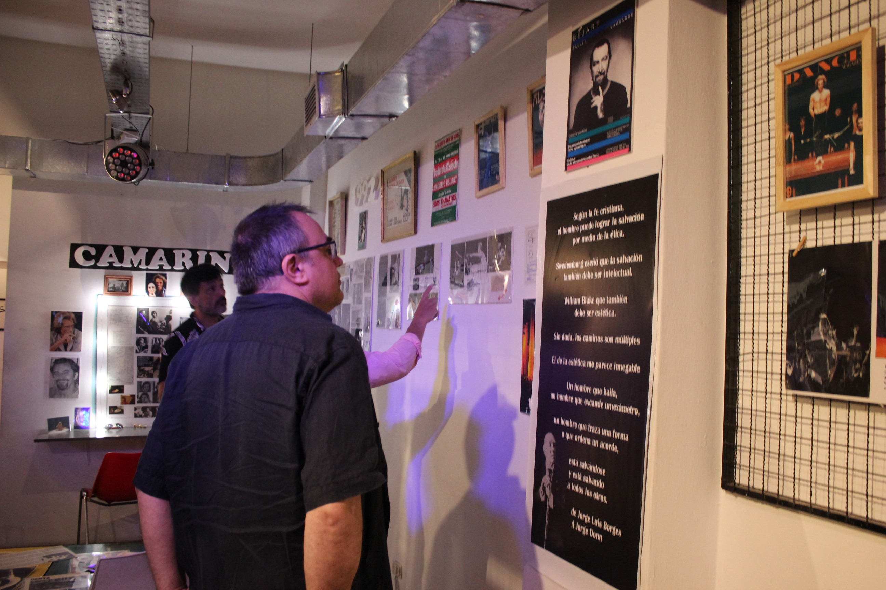

Gestionado por su hermana melliza Delia Donn y su hijo Héctor Rodríguez
Contáctanos por WhatsApp"Celebramos su vida y arte"
El proyecto cultural nace como homenaje a la vida y obra de Jorge Donn, bailarín argentino-internacional y figura clave en el ballet contemporáneo.
Ubicado en el corazón de Palermo, este espacio busca ser un punto de encuentro artístico para la comunidad local e internacional. Ofrecemos talleres, presentaciones audiovisuales mensuales, y un lugar para la creación cultural independiente.
Nuestro objetivo es promover el teatro independiente, la danza y otras expresiones artísticas con identidad barrial y latinoamericana.
Algunos momentos especiales de nuestros talleres y proyecciones

 

Primer sábado de cada mes proyectamos documentales y entrevistas sobre la vida de Jorge Donn y Maurice Béjart, seguidas de charlas abiertas con artistas y docentes invitados.



📍 Güemes 3825, Palermo, Buenos Aires